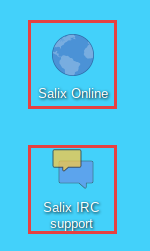

If you are still quite new to either Salix, Slackware or even Linux in general, then you should first of all take some time to study Salix Startup Guide, as it is specifically intended to be accessible to newcomers. The desktop link, Salix Online, will bring you to the Salix Homepage. You could also use the IRC link to be in live communication with members of the community and get instant help if necessary. If you do, however, you might want to modify the default GuestXX login to something more personal.

We hope that the information here will allow you to get Salix up and running fairly straightforwardly, to begin exploring its potential, and, above all, to use it for what you want to do. Nonetheless, sometimes you may not know how to do something or be able to make it work.
While Salix aims to be elegant and intuitive, every operating system has its own characteristics, and if you are new to Linux, the sheer fact that it is different means there will inevitably be a process of adaptation (see Linux is Not Windows), even where its very best features are concerned. The only way to climb the learning curve is by trying things out and using them. The more you explore Salix, the quicker you will become familiar with it. However, it is worth emphasising that the default set of applications (they vary depending on the version of Salix you choose, see List of Applications) include many that have a very similar look and feel to those found on other operating systems, such as the office suite LibreOffice, which offers full compatibility with common file formats.
Our Wiki and
Forum will be two other important sources of information. The search
option of the forum will quickly show you if the question you have in
mind has already been posted by a member of the community and if it has
been answered. For the same reason, please also search the internet. If
you are working on the command line (
Working with the Command Line Interface), remember to consult
man (and try man salix for a summary of key points
specific to this distribution). There are several online forums devoted
to Linux, such as
linuxquestions.org. It should be noted that each forum has its own
subculture, and sometimes explicit posting guidelines. If you post a
query to a forum, bear
Paul Grice's conversational maxims in mind: for instance, be as
specific as possible and mention any information you have already found
out. To put it another way, remember you are consulting a human
community, not an interactive online encyclopedia; it is a
conversation, something which can be easily lost sight of online.
Forums are a concrete example of one of the qualities at the heart of Linux, which is that it is community-based. Rather than being a commercial product, in almost all cases it is developed by enthusiasts collaborating together for the sheer delight of making good software. This community extends out into the users of the distribution on its forums. Even if you just want to use core office, multimedia or network applications productively, over time the power that Linux gives users tends to promote self-reliance and an ability to configure and fix their computer setup independently. The same approach underlies the development of Linux as an operating system; where there is room for improvement, someone will dive in and tinker. The cumulative result is that Linux today is highly usable out of the box.
The best way to learn Linux is by using it to the full, finding out in the process how to make it do exactly what you want. After a while, though, it may be helpful to supplement this experience with some more systematic background. As mentioned in the section introducing the command line, the Documentation board on the Salix forums contains a useful post on tutorials and guides. Wherever you find problems recur, it may be worth reading up on the underlying issues over time to gain broader knowledge, especially when it comes to general features of Linux that may be unfamiliar to you, such as file permissions.
Some users may face problems at the very beginning with peripherals or the network. This can seem daunting if you are also adapting to a different operating system at the same time. Explore the options under Menu/System carefully. If difficulties persist, with judicious use of the information and help in the wiki and forums, you should hopefully get the essentials set up as you wish reasonably quickly; then you will be able to take Linux at your own pace.